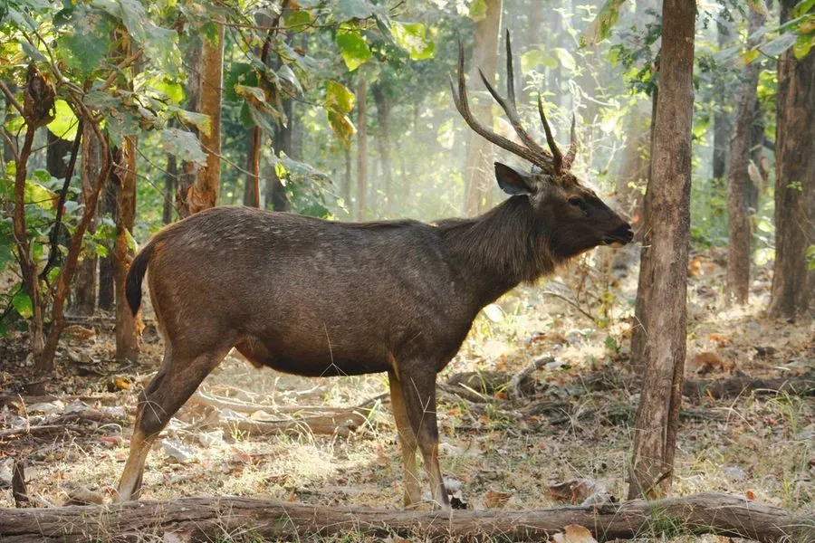

哺乳动物 · 动物界
水鹿 Rusa unicolor

南亚与东南亚的大型鹿类，喜欢水边环境、善于游泳，雄鹿长有三叉粗角，常在夜间活动并舔食盐分。
- 分类
- 门脊索动物门纲哺乳纲目偶蹄目科鹿科属水鹿属
- 栖息环境
- 靠近水源的阔叶林、竹林与林缘灌丛，喜水善游泳
- 地理分布
- 南亚和东南亚，中国南方及西南地区有分布
- 保护级别
- IUCN 易危（VU）；中国国家二级保护动物
物种志
水鹿体长 1.7–2.7 米，肩高 1.2–1.6 米，体重 100–300 kg，是亚洲体型最大的鹿类之一。它的毛色为深褐至灰褐色，颈部有较长的鬃毛，尾巴长且末端有簇毛；雄鹿长有粗壮的三叉角，角长可达 1 米，雌鹿无角。
水鹿分布于南亚和东南亚的森林、灌丛和草原，从印度、尼泊尔到中国南方、东南亚各国，栖息于靠近水源的阔叶林、竹林和林缘。它喜欢水边环境，善游泳，常在水塘和溪流附近活动，以草、树叶、嫩枝和果实为食，夜间也到盐碱地舔食盐分。水鹿多独居或结成小群，晨昏和夜间活动；雌兽妊娠期约 8 个月，每胎 1 仔。由于盗猎和栖息地丧失，水鹿在其分布区多地种群下降，被列为易危，中国将其列为国家二级保护动物。
形态与习性
- 食性草、树叶、嫩枝与果实，夜间舔食盐分
- 体长1.7–2.7 m，肩高 1.2–1.6 m
- 体重100–300 kg
- 寿命野外约 15–20 年
- 繁殖妊娠期约 8 个月，每胎 1 仔
- 角雄鹿三叉粗角，长可达 1 m
- 习性喜水善游泳，常在溪流和水塘附近活动
趣味知识
- 水鹿善于游泳，常在水塘和溪流附近活动。
- 雄鹿的角粗壮且分三叉，角长可达 1 米。
- 夜间水鹿会到盐碱地舔食盐分，补充矿物质。
- 水鹿是亚洲体型最大的鹿类之一，体重可达 300 kg。